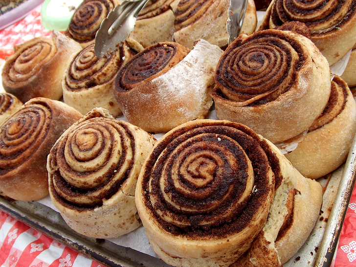

Home
Cinnamon Rolls

Description
Delicious Swedish pastry.
Ingredients for 25 buns
- Yeast 35 g
- Sugar 100 g
- Milk 300 ml
- Egg 1
- Butter 120 g
- Salt 1 tbsp
- Ground cardamom 1 tbsp
- Flour 750 g
Filling
- Butter 100 g
- Sugar 50 g
- Cinnamon 2 tbsp
Glaze (optional)
- Egg 1
- Water 2 tbsp
- Pearl sugar
Steps
- Crumble the yeast in a bowl and stir in a few tablespoons of milk.
- Melt the butter and pour the milk on it.
- Add the rest of the ingredients and knead the dough for 10-15 minutes.
- Let the dough rise while covered at room temperature for 30 minutes.
- Roll out the dough so that is about 3 mm thick and 30 cm wide.
- Spread the room-temperature butter on top.
- Make a mixture of sugar and cinnamon and sprinkle it over the dough.
- Roll the dough the long way and cut the roll into 25 pieces.
- Place them with the cut edge facing upwards in paper molds, put them on a baking sheet and let rise under a towel for 60 minutes or until the buns have doubled in size.
- Beat together the egg and the water and brush the mixture on the buns.
- Sprinkel pearl sugar on top and bake in the oven at 220 °C for 5-6 minutes.